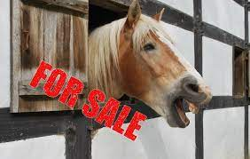
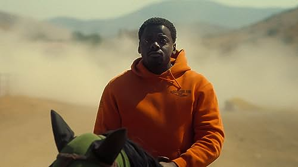

The art of selling horses
Follow the guide to master the art of selling horses

The idea of selling horses are based on three things:
1.Finding the best, the most suitable horse for you to sell;
2. Making your business plan to gain profits;
3. Entering the market and selling the horse!
The idea of selling the horse is based on true story by the director Jordan Peele who once in his movie ,,Nope" tried to explain to humanity that horses are important and you can actually gain profits by selling them.
The whole story begins when pirst person decided to sell a horse. Once the horses were not present in the households an
they were wild animals.
Soon the rich households decided to pet them and have them inside their farms and houses. In the beginning, the prices
of the horses were really low, however they went high
Go back to First Page